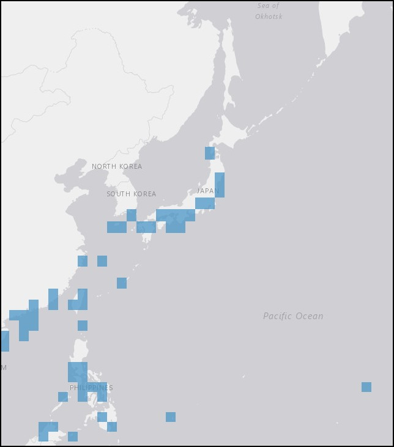

In June 1860, Charlotte visited Hakodate, Japan. The Japanese helmet snail is common to the area.

More information on the taxa and distribution of Phalium bisulcatem is available through OBIS Mapper here.